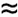

| [ Team LiB ] |
|
13.4 The Relative Gain ArrayEd Bristol (a control engineer with Foxboro) developed a heuristic technique to predict possible interactive effects between control loops when multiple SISO loops are used. He was motivated to develop a dimensionless measure of interaction by some boiler control problems he was working on. His simple measure of interaction is known as the relative gain, or the Bristol relative gain array (RGA). Since then, many papers have been written to provide a more rigorous theoretical basis for the technique. Two-Inputs and Two-OutputsThe relationship between u1 and y1 at steady state (s = 0), with no change in u2, is This is referred to as the gain between u1 and y1 with all other loops open (that is, u2 is constant for this 2 x 2 example). The steady-state relationship between u1 and y1 at steady state, with y2 maintained constant at its setpoint (using a controller with integral action), is Notice that Equation (13.19) is the gain between input 1 and output 1, assuming output 2 is constant. Definition of the Relative GainThe relative gain (lij) between input j and output i is defined in the following fashion:
By convention, the symbol used for the relative gain is lij. Please do not confuse it with the l that was used for the IMC filter or for the l that is commonly used to represent the eigenvalues of a matrix. The relative gain will normally be shown with two subscripts, distinguishing it from eigenvalues or the IMC filter factor. Relative Gain Between Input 1 and Output 1 for a Two Input–Two Output SystemThe relative gain between input 1 and output 1 is then [see Equation (13.23)] We see that the relative gain between u1 and y1 for a 2 x 2 system is Remember that Equation (13.21) is only true for the two input–two output case. The RGAThe RGA is simply the matrix that contains the individual relative gain as elements, that is L = {lij} . For a 2 x 2 system, the RGA is Question: What value do we desire for the relative gain? Think of it this way. If we want to use a u1-y1 pairing for a SISO controller, we do not want it to matter whether the other loops in the system are closed or not. This tells us that we desire a relative gain close to 1.0. That is, Answer: We desire l11  1.0 if we wish to pair output 1 with input 1. The l11 calculation for a 2 x 2 system yielded . The more general result is (see Appendix 13.1 for a derivation) where We check the general results derived above by applying them to a 2 x 2 (two output, two input) system, and recalling our rules for inverting a 2 x 2 matrix, Multiplying the individual elements of G(0) and |
| [ Team LiB ] |
|